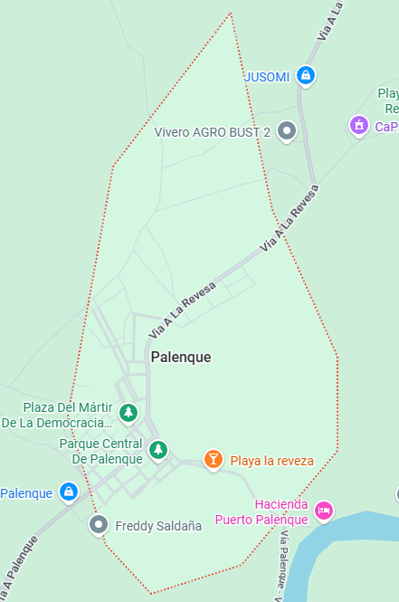

Reseña: Uno de los cantones con mayor riqueza histórica y folclórica de la provincia. Es el lugar de nacimiento del héroe revolucionario Nicolás Infante Díaz. Su producción se centra fuertemente en el maíz, arroz y cacao.
Urbanas: Palenque.
Rurales: No cuenta con parroquias rurales oficiales (se organiza en recintos).
Seco de gallina criolla, el tradicional gallo pinto y bollos de pescado de río.
Playa de la Revuelta: Un balneario fluvial muy popular en los veranos por sus amplias orillas de arena y aguas tranquilas.
Monumento a Nicolás Infante Díaz: Sitio de interés cívico situado en el parque central del cantón.
Hospedaje Palenque, Hostal Central.
Jordy Carriel Navas.

25.000 habitantes.
